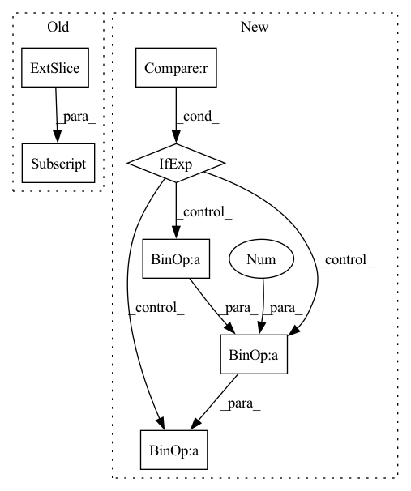

Pattern ID :4860
Before Change
pl_penalty = (pl_lengths - pl_mean).square()
loss_Gpl = pl_penalty * self.pl_weight
loss_Gpl = (gen_img[:, 0, 0, 0] * 0 + loss_Gpl).mean() * float(gain)
loss_numpy["loss_Gpl"] = loss_Gpl.cpu().detach().numpy()
loss_Gpl.backward() // 咩酱：gain即上文提到的这个阶段的训练间隔。
After Change
phase = {"Greg": "none", "Gboth": "Gmain"}.get(phase, phase)
if self.r1_gamma == 0:
phase = {"Dreg": "none", "Dboth": "Dmain"}.get(phase, phase)
blur_sigma = max(1 - cur_nimg / (self.blur_fade_kimg * 1e3), 0) * self.blur_init_sigma if self.blur_fade_kimg > 0 else 0
loss_numpy = {}
In pattern: SUPERPATTERN
Frequency: 3
Non-data size: 7
Instances Fragment ID: 17074068
Project Name: miemie2013/miemiegan
Commit Name: c5e7ecffe23cf2fc2613ee06ec8fd94c8d7230ac
Time: 2022-03-24
Author: 53960695+miemie2013@users.noreply.github.com
File Name: mmgan/models/architectures/styleganv3_model.py
M Class Name: StyleGANv3Model
N Class Name: StyleGANv3Model
M Method Name: accumulate_gradients(9)
N Method Name: accumulate_gradients(9)
M Parent Class: torch.nn.Module
N Parent Class: torch.nn.Module
M File Name: mmgan/models/architectures/styleganv3_model.py
N File Name: mmgan/models/architectures/styleganv3_model.py
M Start Line: 140
M End Line: 251
N Start Line: 140
N End Line: 251
Before Change
n_gram = permute(input[..., : -(n - 1), :], shifts=n - 1)
for i in range(1, n - 1):
n_gram = bind(
n_gram, permute(input[..., i : -(n - 1 - i), :] , shifts=n - 1 - i)
)
n_gram = bind(n_gram, input[..., n - 1 :, :])
After Change
n_gram = permute(input[..., : -(n - 1), :], shifts=n - 1)
for i in range(1, n):
stop = None if i == (n - 1) else -(n - i - 1)
sample = permute(input[..., i:stop, :], shifts=n - i - 1)
n_gram = bind(n_gram, sample)
return multiset(n_gram) Fragment ID: 17074064
Project Name: hyperdimensional-computing/torchhd
Commit Name: 89346dabefc09f13322828e9a541580b65e86d72
Time: 2022-05-17
Author: mikeheddes@gmail.com
File Name: torchhd/functional.py
M Class Name: AnonimousClass
N Class Name: AnonimousClass
M Method Name: ngrams(2)
N Method Name: ngrams(2)
M Parent Class:
N Parent Class:
M File Name: torchhd/functional.py
N File Name: torchhd/functional.py
M Start Line: 475
M End Line: 496
N Start Line: 632
N End Line: 667
Before Change
def make_HiPPO(N):
p = np.sqrt(2 * np.arange(1, N + 1) + 1.0)
A = p[:, np.newaxis] @ p[np.newaxis, :]
return np.tril(A, k=-1) + np.diag(np.arange(1, N + 1) + 1)
After Change
def make_HiPPO(N):
return np.array([[
np.sqrt (2 * n + 1) * np.sqrt(2 * k + 1 )
if n > k else (
n + 1 if n == k else 0.
)
for k in range(1, N+1) ] for n in range(1, N+1)]) Fragment ID: 17074099
Project Name: srush/annotated-s4
Commit Name: 36dbdf6e4a87842db11b80a1a2653c69a837d941
Time: 2021-12-29
Author: srush.research@gmail.com
File Name: s4/s4.py
M Class Name: AnonimousClass
N Class Name: AnonimousClass
M Method Name: make_HiPPO(1)
N Method Name: make_HiPPO(1)
M Parent Class:
N Parent Class:
M File Name: s4/s4.py
N File Name: s4/s4.py
M Start Line: 185
M End Line: 187
N Start Line: 272
N End Line: 277